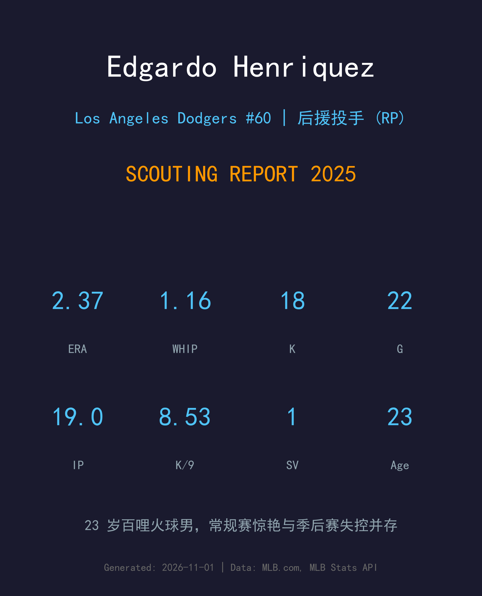
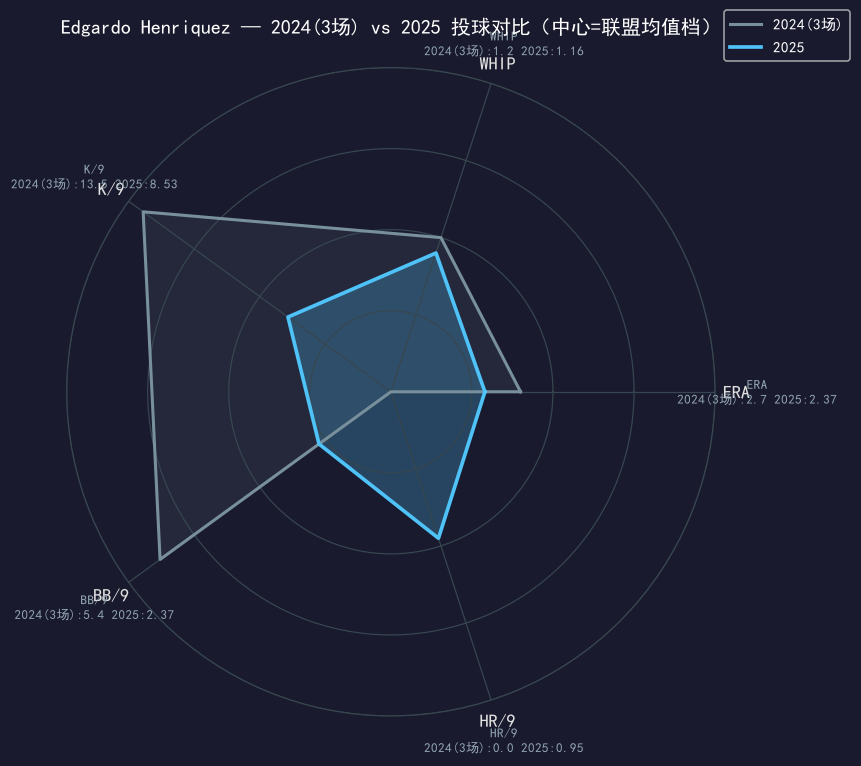
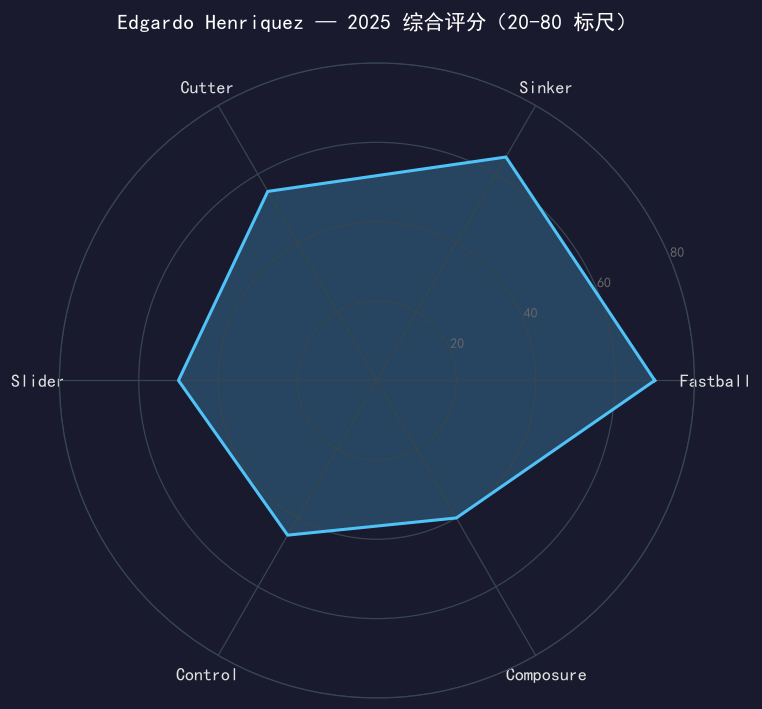

Los Angeles Dodgers #60 | 后援投手 | 右投 | 23 岁百哩火球男，常规赛惊艳与季后赛失控并存

Edgardo Henriquez 的 2025 年是道奇牛棚最动人的成长故事之一：春训左脚骨折、3 月中躺进伤兵名单一路待到 6 月底，23 岁的他没有让伤病定义赛季——复出后 22 场、2.37 自责分率、1.16 WHIP，还有一颗全季均速 100.9 mph 的四缝线速球。
百哩火球是他所有故事的起点：四缝线 100.9、伸卡 100.8，双百哩速球结构配上卡特与滑球，raw stuff 是道奇牛棚里仅次于顶级终结者的存在。常规赛的 19 局里，他只送出 5 次保送、被敲 17 支安打—— content 完全合格。
但季后赛给他上了 23 岁该上的课：三场出赛、4 次保送挤进 2 局，两次在满垒危机登板都没能抓到出局数。常规赛的冷静与大舞台的失控之间的落差，正是「天才 raw stuff」与「完成品终结者」之间的距离。他有整整一个职业生涯去走完这段路——而道奇显然愿意等。
9 月 24 日登上大联盟，3 场出赛、1 次救援成功——在赛季末的牛棚机会里交出 2.70 自责分率，为 2025 年的爆发埋下伏笔。
左脚骨折错过开季三个月后，22 场 2.37 自责分率、1.16 WHIP、5 次中继成功，100.9 mph 均速成为道奇牛棚最快的球——一颗未来的终结者火种。
10 月 24 日进入世界大赛名单，在第三场投出 2 局零失分 2 三振——大舞台的第一课，有学费也有收获。

| 赛季 | G | W-L | ERA | WHIP | IP | SO | BB | K/9 | BB/9 |
|---|---|---|---|---|---|---|---|---|---|
| 2024（新人，3 场样本） | 3 | 0-0 | 2.70 | 1.20 | 3.1 | 5 | 2 | 13.50 | 5.40 |
| 2025 | 22 | 2-1 | 2.37 | 1.16 | 19.0 | 18 | 5 | 8.53 | 2.37 |
2024 只有 3.1 局的极小样本，数字仅供方向参考；但 2025 的 19 局已经足够说明问题：保送率从样本期的 5.40 砍到 2.37，WHIP 稳定在 1.16——这不是 raw stuff 的偶然闪光，而是配球与控球的实质进步。唯一的小遗憾是三振率从样本期的 13.5 回落到 8.53：他今年更依赖百哩速球的压制而非纯粹的挥空，这是年轻火球手走向成熟球路的正常轨迹。
2025 赛季真实配球数据（MLB Stats API pitchArsenal）：
道奇牛棚最快的球，23 岁就能稳定投出均速破百的四缝线——这颗球的存在本身，就是他所有评分的地板。
双百哩结构中的下沉版本，诱导滚地球的同时维持球速威慑，是与四缝线 interchangeable 的配球地基。
96 mph 的卡特是许多老将的主武器，在他手里只是第三选择——这就是 raw stuff 的奢侈。
两好球后的追杀选项，速差与位移兼具，完成度仍在打磨。
对左打者的变速武器，下坠时机若再稳定一档，五球种将再无死角。
单论球威，Henriquez 的双百哩速球在 2025 道奇牛棚无出其右；但让球探真正兴奋的是数字背后的事：19 局仅 5 保送、WHIP 1.16——这是一个「知道球要往哪去」的年轻投手。左脚骨折给了他意外的三个月，也给了他观察大联盟的机会；复出后的每一场，他都像一个已经想明白自己要怎么投的人。
外卡第一场与世界大赛第五场，他两次在满垒局面登板、两次没抓到出局数就被迫退场，合计 4 次保送。这些数字需要两个注解：其一，样本只有 2 局，任何比率都不可靠；其二，23 岁第一次站上十月舞台，心跳加速是生理而非能力问题。世界大赛第三场那 2 局零失分 2 三振，才是他对这次经历的正式回答——他能在同一个舞台上同时投出最好和最坏的自己，这正是成长的形状。
以 2025 年 11 月的视角，Henriquez 的上升通道清晰可见：2026 年从牛棚中段开始，若控球延续常规赛的稳定，第九局的大门将在两到三年内向他打开。他的模板不是「再培养一个中继」，而是「道奇下一个自家养成的终结者」——球队在世界大赛把他放进名单的那一刻，就已经在付学费预定这个角色了。

百哩火球男，通往终结者之路已铺好
B 级 / 高潜力后援（通往终结者）
道奇 2025 季后赛夺冠之路：外卡 2-0 红人 → NLDS 3-1 费城人 → NLCS 4-0 酿酒人 → 世界大赛 4-3 多伦多蓝鸟。
Henriquez 在十月登场 3 次，交出一份 23 岁新人特有的答卷：外卡第一场首次登板就在满垒局面连送 2 次保送、2 名继承跑者全部回本；世界大赛第五场再次在满垒登板，再次没能抓到出局数。但夹在两场失控之间的，是世界大赛第三场的 2 局零失分 2 三振——那场 6-5 的马拉松胜利里，他和 Will Klein 合计吃下了道奇夺冠路上最艰难的中段局数。
Henriquez 的 2026 年从牛棚中段开始、向第八局迈进：常规赛的 2.37 已经足够赢得教练组信任，季后赛的学费需要用一个完整健康季去消化。以他的球威和成长曲线，「道奇自家终结者」不是愿景，而是时间表问题。
理想剧本：开季进入固定第七八局角色，季末摸到第九局
现实基准：3A 与大联盟之间的功能型上下，继续积累大联盟局数
上行惊喜：滑球完成度跃升，2027 年前成为终结者候选人
Edgardo Henriquez 来自委内瑞拉的库马纳——这座加勒比海港城市出产过无数火球手，而他可能是下一个。2024 年 9 月 24 日，22 岁的他在道奇登上大联盟，3 场出赛、1 次救援成功，用百哩速球完成了自我介绍。
2025 年春训，左脚骨折几乎断送了他的整个赛季：3 月 17 日进入伤兵名单，4 月转入 60 天伤兵名单，直到 6 月 29 日才被激活。但伤病只偷走了他的上半年——复出后的 22 场大联盟出赛，他投出 2.37 自责分率，100.9 mph 的四缝线成为道奇牛棚最快的一颗球。
2025 年 11 月的 Edgardo Henriquez 手握一枚世界大赛冠军戒指、一份 2.37 自责分率的二年级成绩单，和一颗全世界都知道他拥有的百哩速球。他欠十月舞台的账，会用接下来的很多个十月慢慢还——而道奇已经决定陪他一起还。